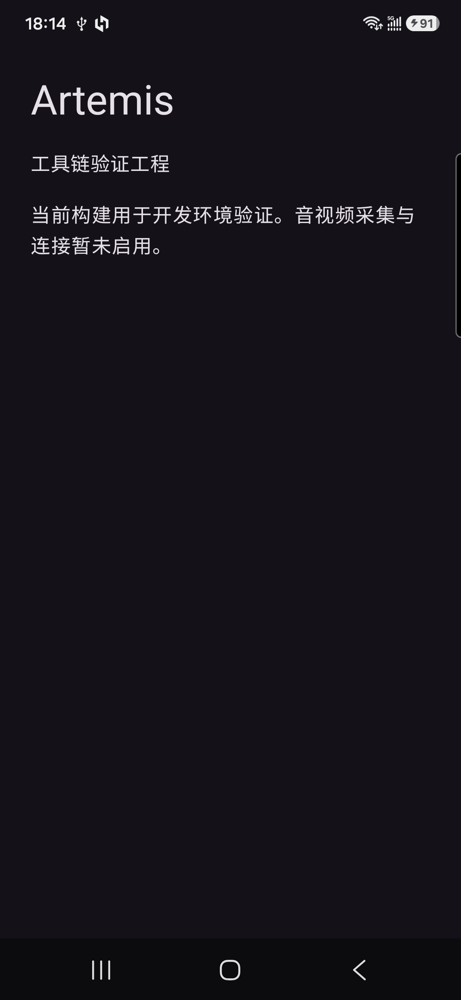
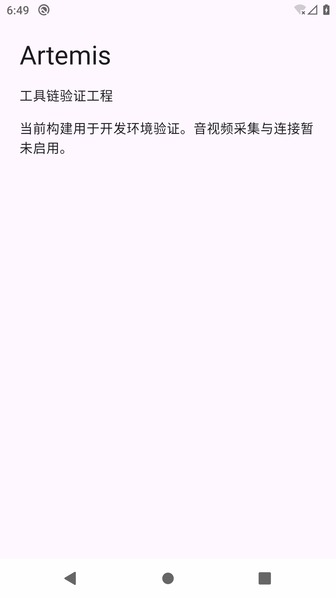

16项必测全部通过，0项失败；无ADB连接设备，3项设备条件用例未实测。建议按已确认范围接受本Spec的工具链交付，不据此宣布JNI、Android10或16KB系统运行兼容通过。最新结果：16项必测及TC-D1真机安装/启动/JNI通过，共17项通过、0项最终失败；TC-D2 Android10及TC-D3 16KB运行因环境不符未实测。当前手机为SM-S9210 / Android16 / arm64-v8a / 4096字节页面。
全部19项计划用例通过，0失败、0未测。TC-D1在实际SM-S9210手机通过；TC-D2在Android10/API29模拟器通过；TC-D3在实际PAGE_SIZE=16384的Android16/API36模拟器通过。测试报告待确认，未归档。
当前Spec的19项验收全部有通过证据；16项必测本轮重新执行，三环境记录按相同APK哈希复核。
| 修订 | 日期 | 修改人 | 改了什么 | 原因 |
|---|---|---|---|---|
| r1 | 2026-10-28 | spec-tester | 本轮独立测试结果与证据 | gate-3通过；账本D-011、D-012 |
| r2 | 2026-10-28 | TeamLead | 登记三项设备条件测试延期与补测清单 | 用户明确决定，见账本D-014 |
| r3 | 2026-10-28 | TeamLead | 登记gate-4确认及收尾关联 | 按账本D-015，用户明确继续Spec流程 |
| r4 | 2026-10-28 | TeamLead | 补齐TC-D1真机证据，重跑全部必测，另两项保留未测 | 按D-016：用户连接USB手机并要求补测 |
| r5 | 2026-10-28 | TeamLead | 历史日志及来源JSON使用可移植副本 | 保留原件字节，派生副本仅替换绝对本机根路径 |
| r6 | 2026-10-28 | TeamLead | 补齐Android10及16KB实际运行，19项全部通过 | D-017：按原测试范围建立官方模拟器环境并实测 |
| r7 | 2026-10-28 | TeamLead / spec-ender | 迁移后新鲜16项复测与同APK三环境证据重新绑定 | 按D-019收尾授权；保留原始证据与修订历史 |
| r8 | 2026-10-28 | TeamLead / spec-ender | 写回真实PR链接与交付状态 | 按D-019收尾授权；保留原始证据与修订历史 |
当前Spec已提交并推送，向dev的PR已创建，首个Spec已原位归档。合并由用户处理。
2026-10-28，用户明确“记录一下，后面再补吧”。TC-D1安装/JNI、TC-D2 Android10、TC-D3 16KB运行继续记为未实测，补测日期待定。所需环境、通过标准和后续接续点已记入延期补测清单。
Run ID：20261028-144342；证据由本轮实际命令和脚本生成。必测功能覆盖16/16，全部计划中已执行16/19；未统计代码行覆盖率，不把计划覆盖或构建成功当作全部设备能力覆盖。生产代码和executor拥有的测试文件在本阶段未修改。
| 场景 | 路径 | 结果 |
|---|---|---|
| US-01 开发者复现Android构建 | 环境预检→独立clean构建两次→APK配置/ELF/ZIP检查 | 通过；设备SmokeTest也已编译，但未运行 |
| US-02 运行PC实验服务 | 干净npm ci→编译→真实CLI启动→HTTP→错误端口/占用→真实Ctrl+C→端口复用与重启 | 通过，测试夹具无残留子进程 |
| US-03 有设备时加载SDK | ADB只读盘点；条件满足后安装、启动与JNI SmokeTest | 未实测：ADB返回0个设备 |
本Spec验证“环境与骨架可复现、最小APK能构建、PC服务可运行、SDK有明确来源”。TC-01至TC-16任一失败都不能通过；TC-D1至D3缺条件可按已确认计划列not-run，并保留风险。配对、信令、摄像头、麦克风与OBS链路由后续Spec实现与验收。
| 权威台账acceptance原文 | 判定 |
|---|---|
| 记录可核验的WebRTC SDK来源、版本、许可证、ABI和Android版本兼容结论。 | 已满足本Spec构建/来源/服务层口径；设备运行边界单独列未实测 |
| 按文档可重复构建最小APK并启动PC实验服务，保留命令、环境和结果。 | 已满足本Spec构建/来源/服务层口径；设备运行边界单独列未实测 |
| 核验Android原生库页面大小要求，明确未完成的真机验证和阻断。 | 已满足本Spec构建/来源/服务层口径；设备运行边界单独列未实测 |
c57bc1be8329a9fc50d1258b43a0cf78d0451be78be37c0388bf684a01f8816a。验收要求两次真实构建成功，未强制调试包字节一致。本轮结果矩阵；受测源码快照；机器报告；权威验收原文来源（本地原件）权威验收原文来源（可移植副本）。
在隐藏的独立控制台中启动本测试自建的Node进程，通过GenerateConsoleCtrlEvent发送真实CTRL_C_EVENT。观察到receiver_stopped、子进程退出0、端口重新绑定成功，且forcedCleanup=false。其它用例夹具的强制清理没有被计为优雅关闭证明。真实控制台信号记录。
本轮ADB列表为空，未执行安装、启动、JNI或设备截图；未生成虚构截图。设备标识读取在内存中处理，证据不保存完整序列号。本工程没有浏览器产品界面；报告只做结构/资源/导航检查，未声称浏览器视觉渲染通过。
| 类别 | 内容 | 处理 |
|---|---|---|
| 测试代码 | 新增receiver-smoke.mjs、Windows控制台辅助、来源核验、ADB盘点、结果汇总及Android设备SmokeTest | 只写tester拥有的测试和配置；生产实现未改变 |
| 测试环境 | 结果汇总初版依赖本机未安装的PyYAML；沙箱子进程调用AWR也受限 | 改为AWR解析权威YAML并通过其JSON接口读取，脚本仅用标准库；以本机授权执行完成，失败日志保留为环境记录 |
| 产品缺陷 | 本轮已执行范围未发现失败用例 | 未进入tester/debugger修复循环，预算使用0轮 |
| 已知缺项 | 三个设备条件用例没有环境 | not-run；保留到后续设备验证，不记兼容通过 |
当前工作树尚未提交。Git HEAD 0fe4114b07a5d0dbdca2489c71934eed56070fdc仅是基线，不能代表已包含此次实现；实际受测文件SHA256保存在源码快照，快照SHA256为5c60e9d2bfa832bd7237361284923b38c77f5f469703f65ade007f6a624335f2。completion.report.v1包含相同基线、明确的dirty工作树scope及source_files。测试阶段只校验报告与登记证据，不执行work complete；收尾提交实现后须绑定实际提交并核验，不能把该基线冒充实现提交。
本轮不修改通用策略库。测试矩阵针对本项目的loopback接口和工具链合同；Windows控制台传输遵循既有Microsoft API。脚本及来源保存在项目中，未形成必须修改全局Skill才能完成本Spec的新增策略规则。
等待用户确认测试报告（gate-4）；确认后进入收尾流程，审查规范、提交与归档按对应门禁执行。本次不启动第二个Spec。用户明确“继续spec流程吧”，gate-4已通过，进入当前Spec收尾；设备三项按D-014延期。归档与提交/推送/PR仍按收尾门禁确认，见收尾报告。
完整复核Run ID：20261028-181629-usb-final；真实USB运行证据：20261028-175651-usb。全部19项计划用例中，17项已执行并通过，2项缺对应系统环境。原始历史报告与日志保留各自Run ID，本节是当前结论。
已安装主APK与AndroidTest APK。最终运行前重新在设备上计算两个APK的SHA256，与当前本机构建逐一相同；执行am start -W返回Status: ok。界面树观察到Artemis及两个预期中文文本，并采集下方实际设备截图。
实际安装主APK · 实际安装测试APK · 设备主APK哈希 · 设备测试APK哈希 · 仅含本应用的界面树。

在手机实际执行WebRtcSdkSmokeTest，PeerConnectionFactory.initialize、原生factory创建、非零指针断言与dispose通过，输出OK (1 test)、INSTRUMENTATION_CODE: -1及退出0。JNI原始日志 · 最终运行结果。
本机尚未安装模拟器及两种对应系统镜像；只读检查显示HypervisorPlatform未启用，VirtualMachinePlatform已启用。对应环境需另行建立，未进行Windows功能切换或重启。环境检查；后续跟踪见延期补测清单。已测arm64、4KB手机的结果仅适用于本次最小工程，不外推其它系统或媒体功能。
已重新执行16项必测；两次clean构建含AndroidTest APK、20项Node与9项原生聚焦测试、6项真实CLI集成、真实控制台Ctrl+C、8库静态及ZIP检查均通过。真机结果按相同APK哈希绑定到完整矩阵；没有把来源不明或不同APK的运行日志并入本轮。
完整用例矩阵 · 实际源码快照 · 机器报告。快照SHA256：4265301503e56c72ad037d2bd04297303cb537e856a955c3619fa02c12b23bf3。当前仍是未提交工作树，source_sha为HEAD基线，实际输入以source_files为准；收尾提交后需派生实际提交绑定证据。
初始USB连接未形成ADB设备；用户开启调试并授权后已连接。随后APK安装与framework启动成功，但锁屏使UI断言读到SystemUI；这些失败保留为环境诊断。JNI先已通过，用户解锁后界面、截图与JNI完整复测通过，未发现应用崩溃或修改业务代码。测试辅助脚本曾在复用已安装APK时引用错误日志名，已修正并重新执行生成引用完整的runtime-final记录；旧记录未改写。
锁屏时的第一次UI失败 · 锁屏诊断 · 解锁后的最终成功。未进入业务debugger修复循环；executor单元测试及业务实现只读。
用户本轮授权了真机补测，尚未批准此前归档菜单。更新后的测试报告待用户确认；原位归档、两条经验写入、提交/推送/PR及AWR全局范围例外继续待确认。TC-D2/D3保持未实测，版本的媒体链路与真机性能验收仍由后续Spec负责。
19/19项通过，0失败、0未测。矩阵由同一APK的16项必测原始回执和三个真实运行环境合并；业务与原executor测试输入逐文件哈希未变。模拟器补测Run ID：20261028-184012-emulator。保留所有历史原始记录，各记录的原执行时间不改写。
| 用例 | 环境 | 实际运行 |
|---|---|---|
| TC-D1 | 真实SM-S9210，Android16/API36，arm64-v8a，4096字节页面 | 安装、验证页、截图、JNI工厂创建/释放通过 |
| TC-D2 | 官方Android10/API29默认镜像r8，x86_64，4096字节页面 | 安装、验证页及额外JNI检查通过 |
| TC-D3 | 官方Android16/API36 Google APIs 16KB镜像r7，x86_64，16384字节页面 | 实际页面大小断言、安装、验证页、JNI通过 |
三个环境的主APK和AndroidTest APK SHA256分别相同，均与当前构建产物一致。每个运行环境实际执行一次nativeFactoryCanBeCreatedAndReleased，返回OK (1 test)、INSTRUMENTATION_CODE: -1及退出0。

通过官方sdkmanager安装Emulator37.2.12、API29镜像r8与API36的16KB镜像r7，均引用此前已接受的android-sdk-license，没有提供新的yes/accept输入。AVD位于项目.cache中；两次运行结束均关闭本次模拟器，退出0。
此前仅凭Windows功能列表判断WHPX缺项并不充分。本轮emulator -accel-check实际返回WHPX(10.0.26200) is installed and usable，随后两次虚拟设备真实启动成功；没有更改Windows功能，也没有重启电脑。
实际加速自检 · 官方包与许可引用 · 实际安装回执 · API29启动和清理 · 16KB启动和清理。
一次包观测脚本错误地使用沙箱重定向LOCALAPPDATA，未找到真实SDK；随后显式指定实际SDK根，观测成功。该诊断失败不是应用测试失败，原输出保留。真实模拟器运行均使用本机SDK路径。
19项机器矩阵 · 实际输入与三环境绑定 · 机器验收报告。快照SHA256：960fc7785cdf55d6998378d3e30209f9eac34a70f867f4353f61ae09ee21c49d。HEAD仅是未提交工作树的基线，最终收尾提交后仍需绑定实际提交；没有把历史基线冒充实现提交。
本轮证明当前APK在已列出的手机与模拟器环境可安装、显示验证页并加载JNI。16KB运行实测ABI为x86_64；实际arm64手机运行页为4KB。相机/麦克风、OBS链路、延迟和温升仍归后续Spec，不从模拟器兼容结果推断真机媒体性能。
DEVICE-001/002/003均已按原验收条件完成，补测清单已更新；模拟器环境与复现步骤已记录。测试报告、收尾范围例外、两条经验写入和归档/提交/推送/PR仍待用户确认；本轮未执行这些门禁后的动作。
Run ID：20261028-203139-closeout。16项必测在迁移后的当前工作树新鲜重跑通过；20项服务聚焦测试、9项原生校验器测试、真实Windows控制台Ctrl+C与两次clean主/测试APK构建均通过。
19项覆盖由本轮16项和已完成的手机/API29/16KB运行记录组成。手机记录时间为此前USB补测，模拟器记录来自迁移验证；没有将引用旧记录写成此次新操作。两个APK的SHA256与这三个运行记录均一致，源码与授权路径调整清单已核对。
19项矩阵及原始时间 · 实际源码与运行绑定 · 授权的两项环境源码调整
| 用例 | 内容 | 结果 |
|---|---|---|
| TC-01 | 环境预检及缺项拒绝 | 通过 |
| TC-02 | Wrapper与分发来源 | 通过 |
| TC-03 | WebRTC固定分发与ABI | 通过 |
| TC-04 | 完整许可通知与POM | 通过 |
| TC-05 | 第1次独立clean构建及APK配置 | 通过 |
| TC-06 | 第2次独立clean构建及APK配置 | 通过 |
| TC-07 | 最终APK的64位ELF与RELRO | 通过 |
| TC-08 | 最终APK ZIP对齐 | 通过 |
| TC-09 | 固定lockfile干净安装与TS编译 | 通过 |
| TC-10 | 端口有效值与默认值的本轮测试 | 通过 |
| TC-11 | 无效PORT的真实CLI拒绝 | 通过 |
| TC-12 | 真实CLI健康接口 | 通过 |
| TC-13 | 精确路径边界 | 通过 |
| TC-14 | 方法拒绝 | 通过 |
| TC-15 | CLI端口占用失败 | 通过 |
| TC-16 | 关闭、真实Ctrl+C与重启 | 通过 |
| TC-D1 | 手机安装/界面/JNI | 通过 |
| TC-D2 | Android10模拟器运行 | 通过 |
| TC-D3 | 16KB模拟器运行 | 通过 |
当前APK仅为静态Compose验证页；实际JNI通过不代表音视频采集、离线配对、OBS链路、后台运行或性能已通过。版本仍执行中。